年内のゼミ最終日(2017/12/26 情報メディア研究室）
12月26日で年内のゼミが終了しました。お菓子と飲み物でつかの間のリラックス！年明けからはいよいよスパートです。頑張っていきましょう（先生）。
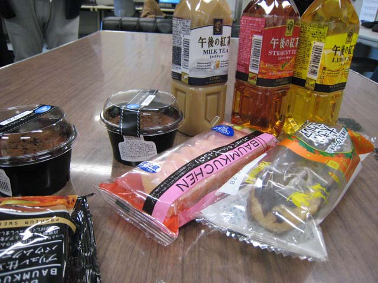
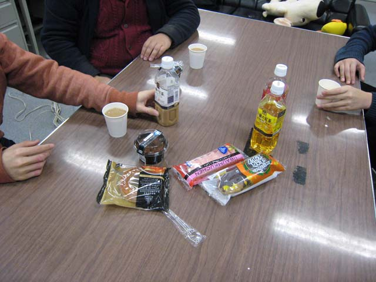
12月26日で年内のゼミが終了しました。お菓子と飲み物でつかの間のリラックス！年明けからはいよいよスパートです。頑張っていきましょう（先生）。


例年に比べ寒さが厳しい12月16日（土）に卒業演習発表会が開催されました。１年間の成果をショートプレゼンと ポスターを使って発表します。学生たちは、いきいきと楽しそうに発表をしていました。これからもその調子で頑張れ―！！！

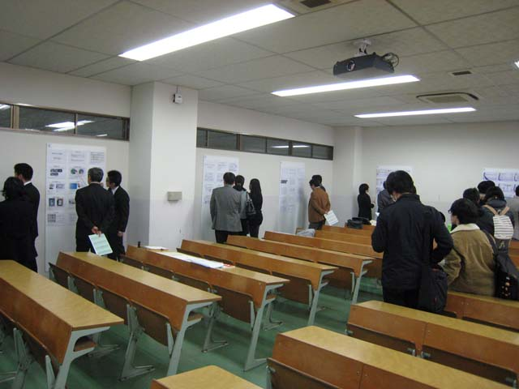
紅葉が見ごろ？の京都（京都工芸繊維大学）にて画像関連４学会（印刷、写真、画像、画像電子学会）連合会、第4回秋季大会 が開催されました。はじめての参加ですが、日頃あまり聞くことのない内容の発表を聞くこともできました。
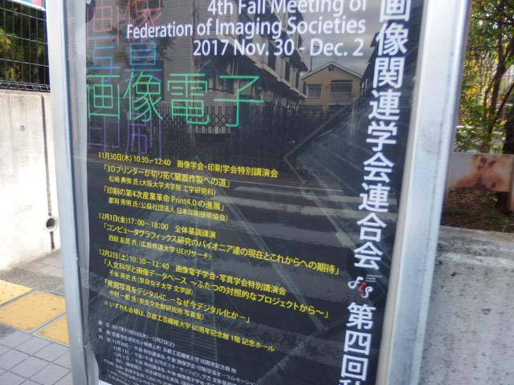
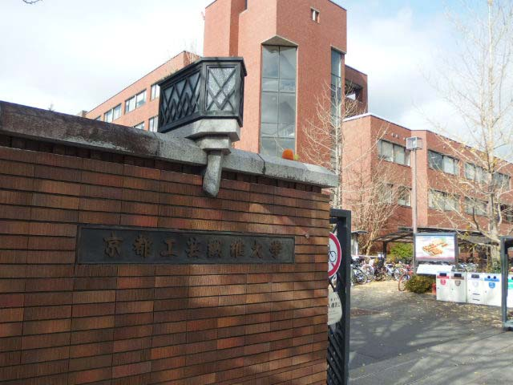
台風22号の接近で雨の予報がでている中、学園祭が行われました。情報メディア研究室は、メディアデザイン室で行われた メディア画像展でARに関連した展示を行いました。学生さんに手伝ってもらい研究成果を発表しました。
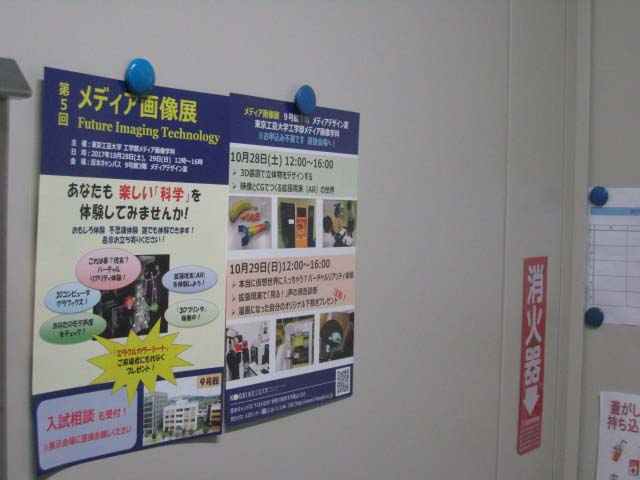
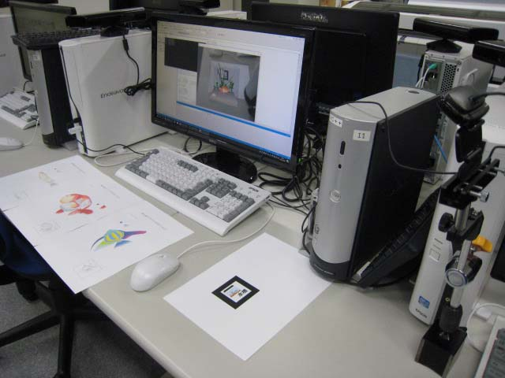
CG応用研究室と情報メディア研究室の合同で卒業研究中間発表会を開催しました。いままでの研究の成果をまとめて発表しました。 みんな、それぞれに頑張って準備をし、無事に終えることができました。これから2月の発表会に向けて、もう一段ギアを あげていきましょう！！
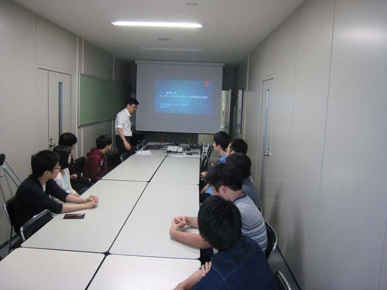
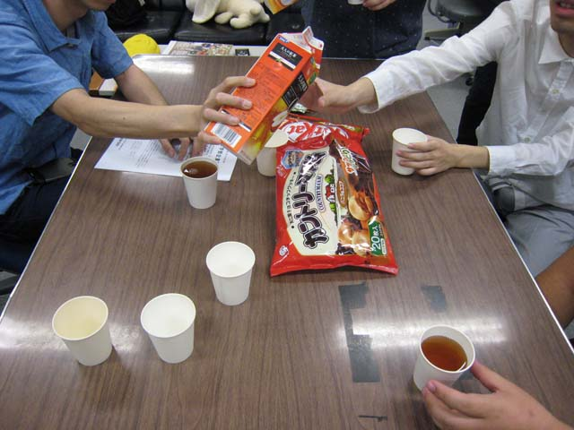
東京理科大学葛飾キャンパスで開催された映像情報メディア学会年次大会にて、大学院の学生さんが 研究発表を行いました。タイトルは「骨格追跡による姿勢教示システムに関する基礎検討」です。なかなかしっかりとした発表でした。 お疲れ！！！
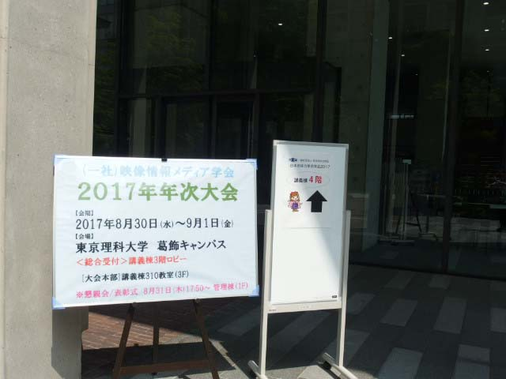
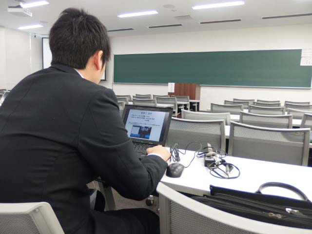
残暑が厳しい中、暑い甲府盆地（山梨大学）で開催された電気学会知能メカトロ二クスワークショップにて、学生さんが 研究発表を行いました。タイトルは「楽器音の主観評価を決定つける音響的要因」です。
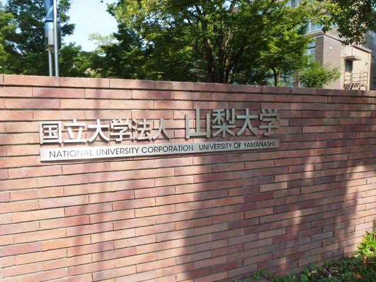
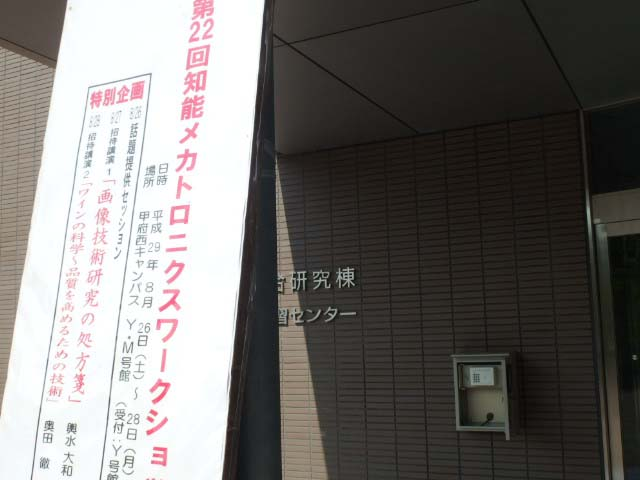
私立大学研究ブランディング事業により、設立された色の科学芸術センターのオープニングセレモニーが開催されました。 義家文部科学副大臣の祝辞のあと、除幕式、引き続き「色をつくる」をテーマにしたギャラリーの内覧会が行われました。
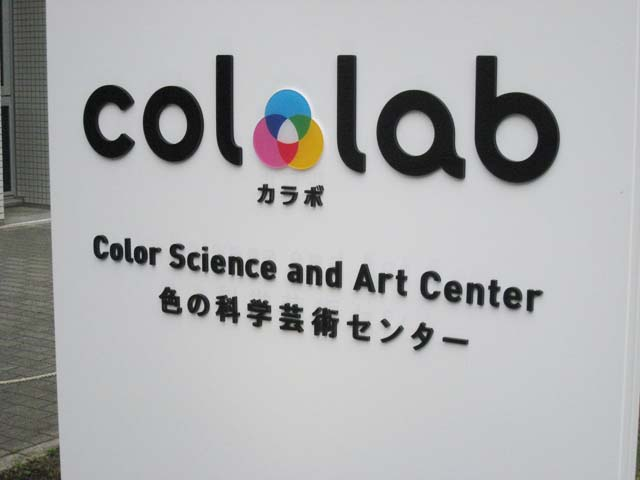
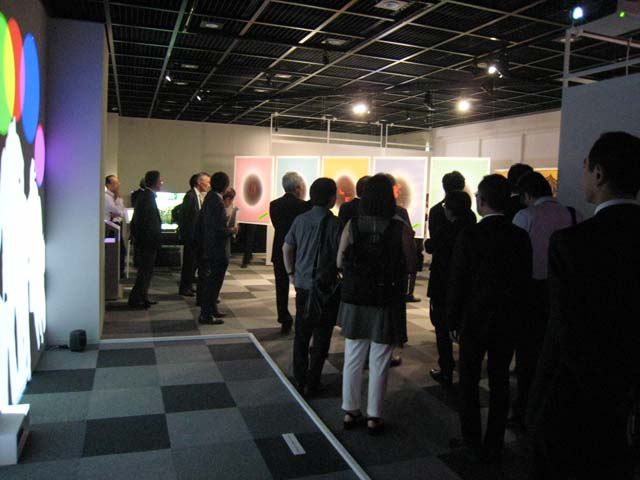
情報メディア研究室は7月22日の工学部オープンキャンパスにて学科企画「３DCGアニメーションをつくろう」を担当しました。 多くの方の来場もあって、盛り上がった企画でした。作ったアニメーションは持ち帰りOKにしました。手伝ってくれた学生さん。 お疲れ！！
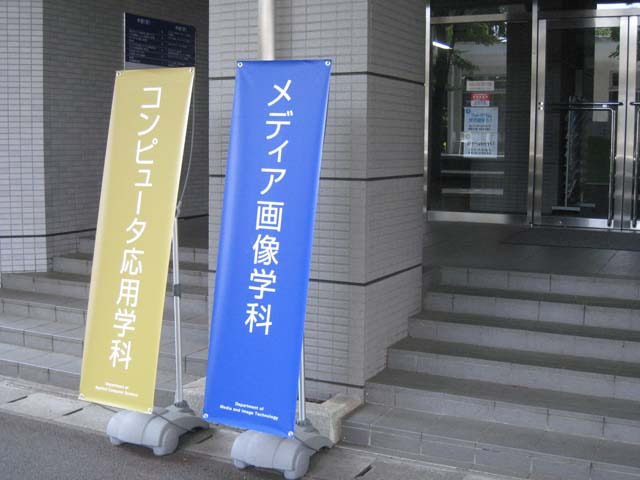
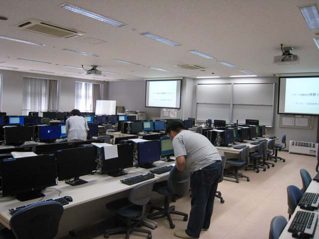
卒業アルバムにのせる研究室のページ用の写真撮影がありました。プロジェクター用のスクリーンを背景にして個人写真を撮りました。 他にはスナップ写真をとって、ページレイアウトは学生さんが作ります。さて、どのようなアルバムに仕上がるか楽しみです
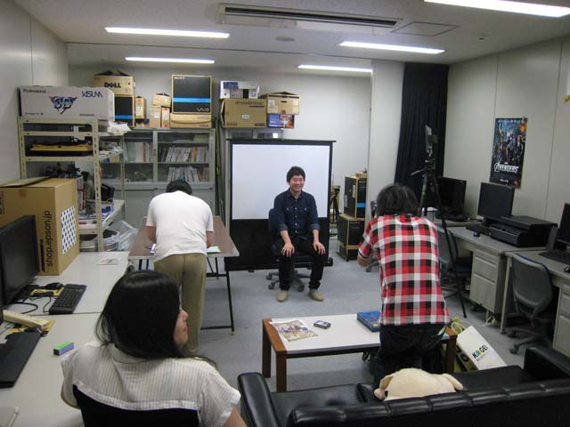
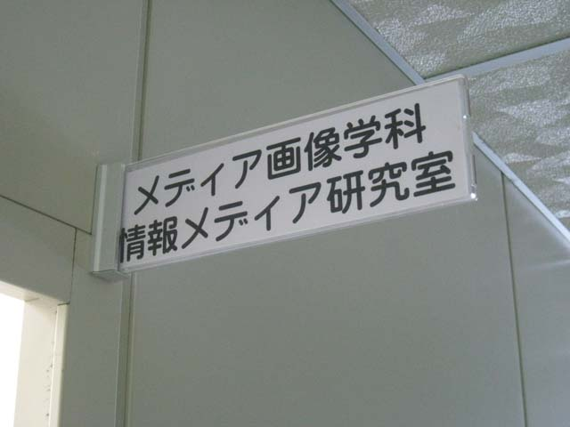
この６月より画像電子学会の理事を仰せつかりました。画像電子学会は印刷学会、写真学会、画像学会と並んで 画像関連４学会の一つで本学とはかかわりの深い学会の一つです。画像電子学会は主に画像処理・認識など情報メディア関連の 発表が多く行われているので、私も入会しました。
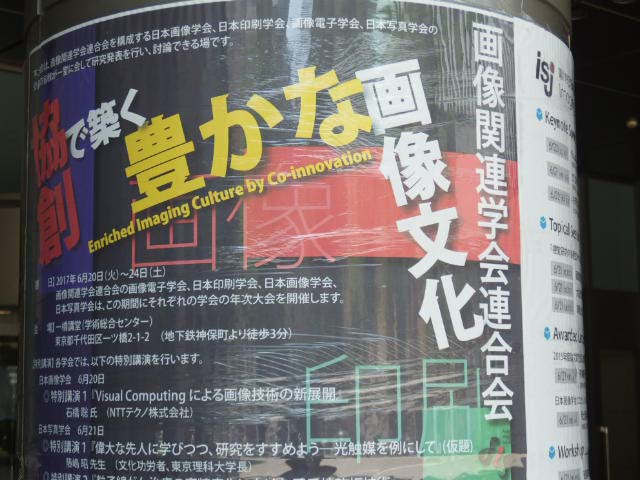
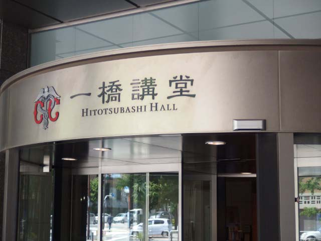
６月の良く晴れた気持ちの良い日曜日、第1回工学部キャンパス見学会が開催されました。多くの生徒さんと その保護者の方がお見えになりました。メディア画像学科では9号館3階のメディアデザイン室を公開しました。 私の担当は「入試ワンポイントアドバイス」。
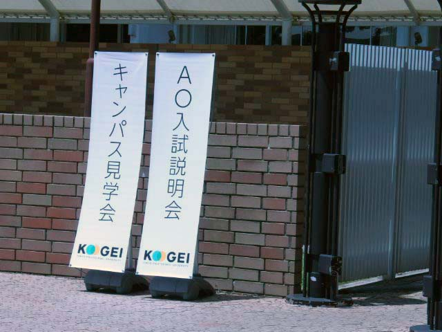
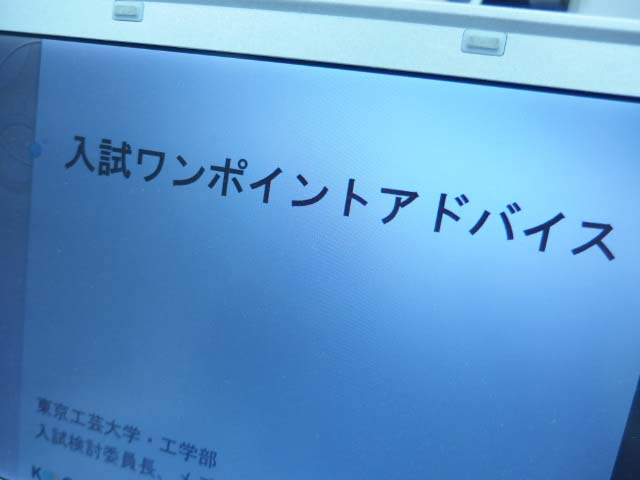
新入生オリエンテーションを箱根天成園で行いました。最初は緊張していた学生たちも2日間のワークやレクリエーション などをとおして、大分打ち解けたようです。来週から前期が始まります、皆さん、しっかり学んでください。
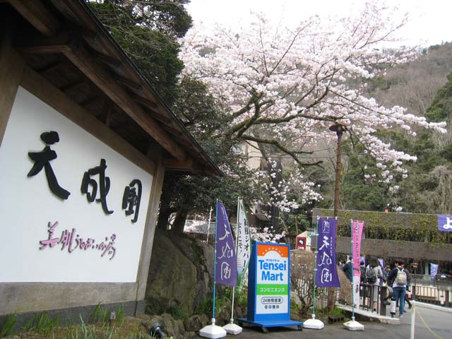
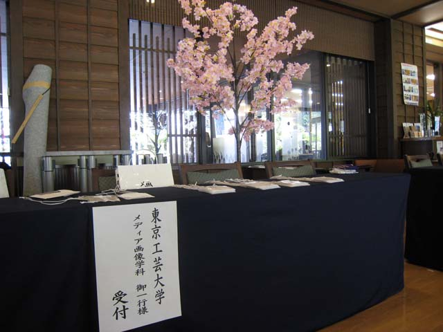
天気に恵まれた日、厚木文化会館大ホールで入学式が行われました。少し緊張した様子の新入生の皆さんとうれしそうな 保護者の皆さん。「ご入学おめでとうございます。工芸大の４年間、良く学び、良く遊び、大きく成長してください」
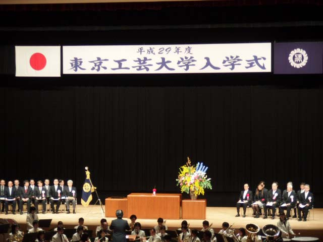
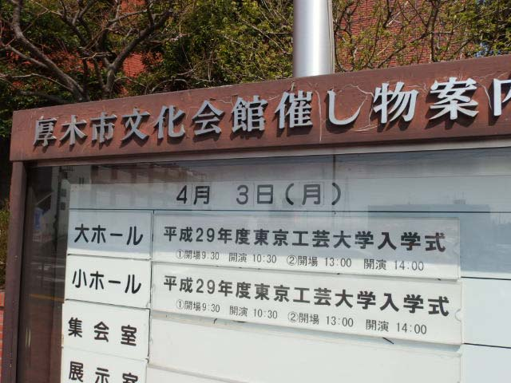
残念なことに朝から冷たい雨が降る中、17年度春のオープンキャンパスが開催されました。 メディア画像学科では「３次元イメージングテクノロジーを体験しよう」と題して学科紹介や研究室紹介をおこないました。
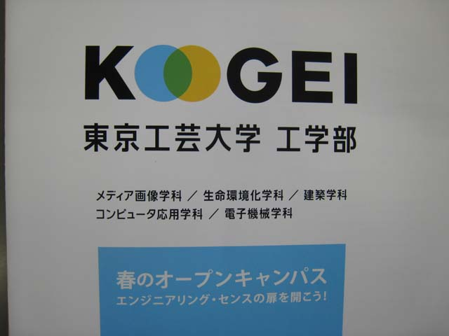
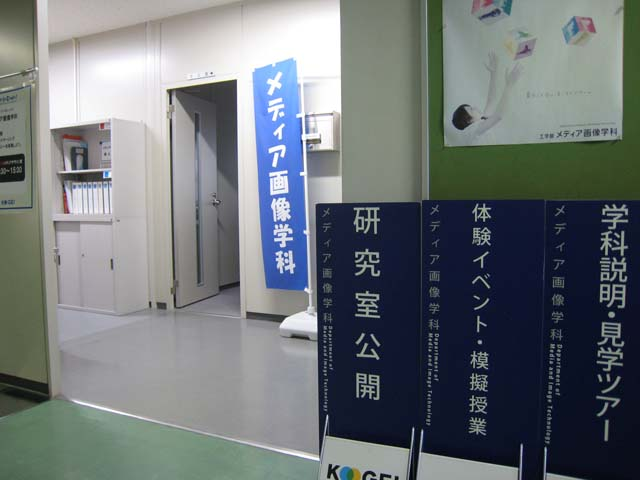